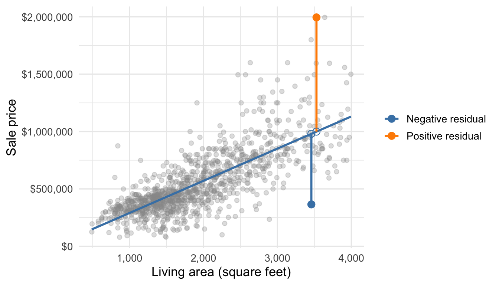
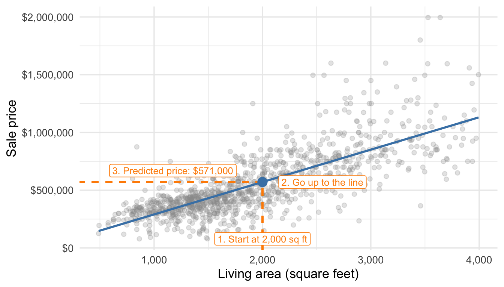
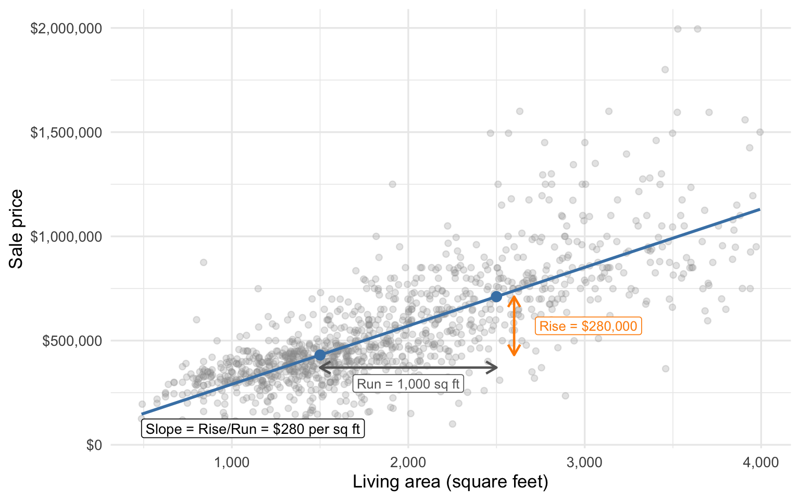
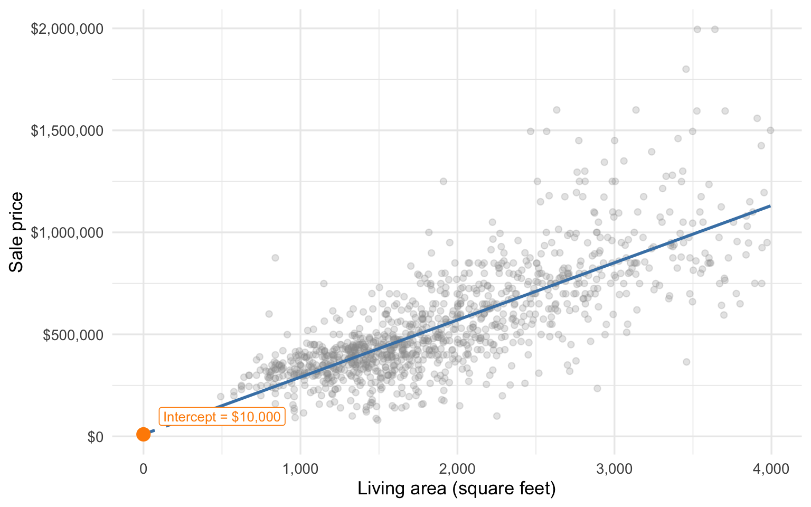
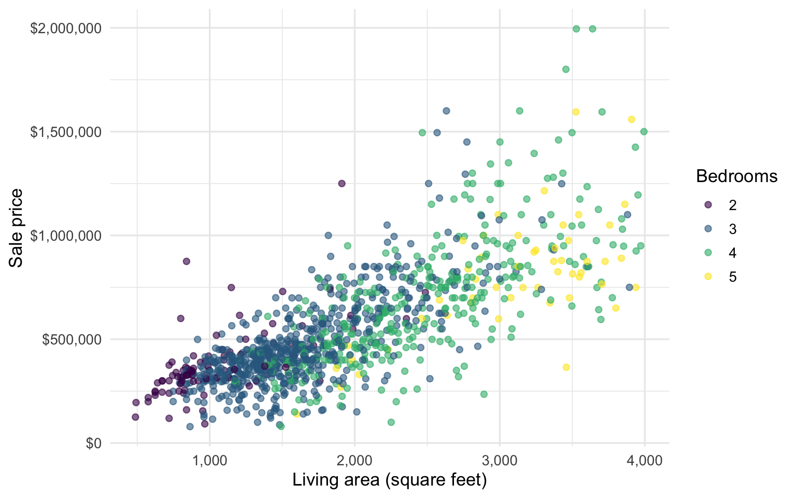
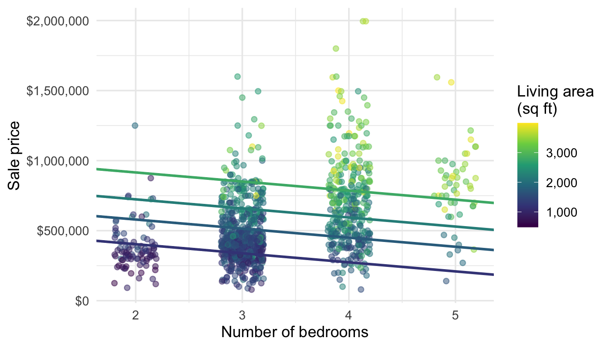
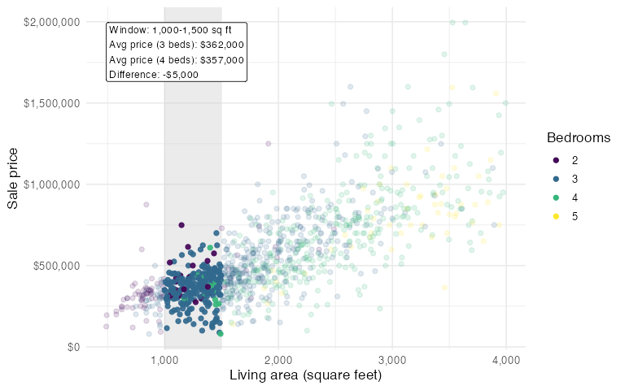
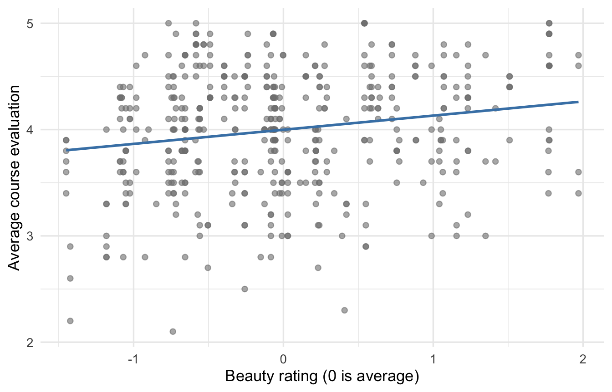

19 Introduction to Linear Regression
In Section 7.4, we used the “line of best fit” to summarize an apparent linear trend between two variables. This is an exercise in linear regression. This chapter builds up linear regression in detail, showing how it can be used to generate predictions and learn nuanced relationships between multiple variables.
Our running example is the Austin housing data from earlier chapters: 1,103 recent sales in three ZIP codes, including each home’s sale price, living area, and number of bedrooms.
19.1 Finding the line of best fit
We’ve been referring to the “line of best fit”, but that’s imprecise. It’s only the line of best fit when we measure “best” in a particular way: as the line that minimizes our average squared prediction error. Write a candidate line as \(b_0 + b_1x\), with intercept \(b_0\) and slope \(b_1\). The least-squares line uses the values of \(b_0\) and \(b_1\) that minimize the sum — or equivalently the average — of the squared errors:
\[ \frac1n \sum_{i=1}^n {(y_i - \underbrace{(b_0 + b_1 x_i)}_{\text{prediction}})^2}. \]
Here \(y_i\) is the outcome variable, the thing we predict — sale price — and \(x_i\) is the predictor, living area.
Any other values of \(b_0\) and \(b_1\) would give a larger average squared error over the observed data points. We write \(\hat\beta_0\) and \(\hat\beta_1\) for the intercept and slope that minimize the average squared error; these are the least-squares coefficients.
These are the same values we obtained in Section 7.4: \(\hat\beta_1 = b = r\,s_y/s_x\) and \(\hat\beta_0 = a = \bar y - \hat\beta_1\bar x\). Those formulas solve the minimization problem when the model has one predictor.
Notation 19.1: Hats mean estimates
A hat marks a quantity estimated from data: \(\hat\beta_0\) and \(\hat\beta_1\) are estimates of a population intercept and slope, which the next chapters define precisely. The fitted value \(\hat{y}_i\) wears its hat for the same reason: it estimates the average outcome at \(x_i\). And the sample proportion \(\hat{p}\) fits the same pattern once we think of it as estimating a population proportion.
19.1.1 Residuals and fitted values
For house \(i\), the fitted value is the prediction from the fitted line:
\[ \hat{y}_i = \hat{\beta}_0 + \hat{\beta}_1 x_i. \]
In plain English, \(\hat{y}_i\) is the price we predict for house \(i\) from its living area. The fitted values carry the part of price that can be predicted from area using a straight line.
The residual is the observed sale price minus that fitted value:
\[ e_i = y_i - \hat{y}_i. \]
The residual is the prediction error for house \(i\). Residuals carry the part of price that the fitted line does not predict from area — any part of that relationship that is nonlinear, the influence of other variables (the location, age, amenities, and so on) as well as (essentially) random variability like who happens to be in and out of the market at the same time, what other houses are listed concurrently, and so on.
NoteDefinition: Residual
The residual for observation \(i\) is \(e_i = y_i - \hat{y}_i\), the observed outcome minus its fitted value. A positive residual means the observed outcome was higher than predicted; a negative residual means it was lower.
Figure 19.1 draws two residuals as vertical distances from the fitted line. The endpoints on the line are fitted values, while the observed points are sale prices.
The positive-residual home has 3,528 square feet and sold for $1,995,000. Its fitted value is $999,252, giving a residual of $995,748. It sold for more than expected given its size. The negative-residual home has 3,459 square feet and sold for $365,000. Its fitted value is $979,907, giving a residual of -$614,907. It sold for less than expected given its size. That doesn’t mean that the first house was a good deal and the second a bad deal, just that they sold for more or less than expected given the information we had. The first house might be newer, in a more desirable area, or track to a better school district.
19.2 Interpreting linear regression with a single variable
A regression with one predictor is called a simple regression; a regression with two or more predictors is called a multiple regression.
The least-squares fit for predicting price from living area is
\[ \widehat{\text{price}} = 10,103 + 280.37 \times \text{area}, \]
and the fit for predicting price from the number of bedrooms is
\[ \widehat{\text{price}} = -7,973 + 167,087 \times \text{beds}. \]
Statistical software reports a fit as a table rather than an equation. Table 19.1 and Table 19.2 give these two in that form: the estimated coefficients, their standard errors and 95% confidence intervals, and then the \(t\)-statistic and p-value for the null hypothesis that the coefficient is zero. The rows underneath hold the residual standard error and \(R^2\), two summaries of prediction error that we take up in the next chapter, along with the number of observations the fit used.
| Estimate | Std. error | 95% CI | t | p-value | |
|---|---|---|---|---|---|
| Intercept | $10,103.32 | $14,577.25 | [−$18,499.00, $38,705.64] | 0.69 | 0.488 |
| Living area (sq ft) | $280.37 | $7.09 | [$266.45, $294.29] | 39.53 | <0.001 |
| Residual standard error | $176,900.47 | ||||
| R² / Adjusted R² | 0.587 / 0.586 | ||||
| n | 1,103 |
| Estimate | Std. error | 95% CI | t | p-value | |
|---|---|---|---|---|---|
| Intercept | −$7,973 | $36,934 | [−$80,442, $64,495] | −0.22 | 0.829 |
| Bedrooms | $167,087 | $10,897 | [$145,705, $188,469] | 15.33 | <0.001 |
| Residual standard error | $249,764 | ||||
| R² / Adjusted R² | 0.176 / 0.175 | ||||
| n | 1,103 |
What do we do with these equations, and what exactly do the estimated intercepts and slopes mean?
19.2.1 Making predictions
To predict the sale price of a newly listed house, plug its living area into the fitted line: for a 2,000-square-foot house the model predicts \(\$10{,}103 + 280.37 \times 2000 \approx \$571{,}000\). Figure 19.2 traces the same calculation on the graph.

This prediction has two interpretations, and both are useful:
- It is our best guess at the sale price of a single newly listed 2,000-square-foot house.
- It is also the model’s estimate of the average sale price among all 2,000-square-foot houses in these ZIP codes.
Thinking of a regression prediction as the estimated average outcome for all similar units is the reading that will carry through the rest of this part of the book.
19.2.2 Interpreting the slope
The slope is the difference in predicted price per one-unit difference in the predictor. Figure 19.3 shows the slope as rise over run along the fitted line.

Because predictions are estimated averages, the slope of $280.37 per square foot can be read two ways:
- Comparing two houses that differ in size by one square foot, the larger house has a predicted price $280.37 higher.
- On average, houses that are one square foot larger sell for about $280.37 more.
19.2.3 Interpreting the intercept
The intercept is the predicted price when every predictor equals zero — here, a house with no living area at all.

Is the intercept meaningful, and should we trust it?
- Meaningful? Perhaps: no house has zero square feet, but an empty lot does, and lots do sell.
- Reliable? No: our smallest house is about 488 square feet, so the value at zero is an extrapolation far outside the data.
- The general lesson: don’t trust predictions far beyond the observed range of the predictors.
19.3 Interpreting linear regression with multiple variables
Living area and the number of bedrooms both predict price, and more useful information should give better predictions. Figure 19.5 shows both at once, and suggests a complication: the two predictors are related to each other, since bigger houses tend to have more bedrooms.

Fitting a linear regression with both predictors gives
\[ \widehat{\text{price}} = 149,451 + 320.09 \times \text{area} - 64,894 \times \text{beds}. \]
Predictions work exactly as before — plug in both X values — but compare the coefficients to the two simple regression slopes, as in Table 19.3:
- The area coefficient grew, from 280.37 to 320.09 dollars per square foot.
- The beds coefficient shrank and changed sign, from +167,087 to \(-64,894\) dollars per bedroom.
| Area | Bedrooms | Area + bedrooms | |
|---|---|---|---|
| Intercept | $10,103 | −$7,973 | $149,451 |
| [−$18,499, $38,706] | [−$80,442, $64,495] | [$98,227, $200,676] | |
| Living area (sq ft) | $280 | $320 | |
| [$266, $294] | [$302, $338] | ||
| Bedrooms | $167,087 | −$64,894 | |
| [$145,705, $188,469] | [−$84,840, −$44,948] | ||
| Residual standard error | $176,900 | $249,764 | $173,791 |
| R² | 0.587 | 0.176 | 0.601 |
| Adjusted R² | 0.586 | 0.175 | 0.601 |
| n | 1,103 | 1,103 | 1,103 |
19.3.1 Multiple regression coefficients are adjusted comparisons
The coefficients in a multiple regression are similar to slopes, with one important difference. The beds coefficient says that if we compare two houses with the same living area that differ by one bedroom, the one with the extra bedroom has a predicted price $64,894 lower. Every coefficient works this way: it gives the predicted difference between units that differ in that one predictor and match on all the others.
One way to see this is to rewrite the multiple regression as a different simple regression of price on beds for each fixed area:
\[ \widehat{\text{price}} = \underbrace{[149,451 + 320.09 \times \text{area}]}_{\text{area-specific intercept}} \; \underbrace{- 64,894}_{\text{common slope}} \times \text{beds}. \]

Does a negative adjusted comparison make sense? If two houses have the same area, more bedrooms likely means smaller rooms — and buyers do not necessarily pay more for an additional, smaller bedroom.
19.3.2 Is the negative coefficient consistent with the data?
We don’t have enough houses of any single size to compare (say) 3- and 4-bedroom prices directly (one reason to fit a model in the first place), but we can compare average prices within subsets of the data where the living area is similar. Figure 19.7 slides a 500-square-foot window across the data and makes that comparison in each window.

In every window, the four-bedroom homes sell for less than the three-bedroom homes, consistent with the negative adjusted comparison. (The actual differences bounce around quite a bit due to small sample sizes, but the overall pattern is clear.) The windows compare houses with similar living areas; the regression coefficient compares houses at a fixed living area.
So what is going on across the three fits?
- Living area and bedrooms are correlated: larger houses tend to have more bedrooms.
- Without area in the model, beds acts as a proxy for size — more bedrooms means a bigger house, which means a higher price on average. That is the positive simple regression slope.
- With area in the model, the beds coefficient describes same-size comparisons, where extra bedrooms likely mean smaller rooms.
Which model is “right”? Both are — they estimate different things:
- The simple regression estimates the overall linear relationship between beds and price, irrespective of size.
- The multiple regression estimates the relationship between beds and price among houses of the same size. Adding a predictor “adjusts for” or “controls for” it by comparing like with like.
The same logic explains the area coefficient’s move in the other direction: without beds in the model, area was partially standing in for bedrooms, and the simple slope blended the two.
19.3.3 Another example: beauty and course evaluations
Hamermesh and Parker collected student evaluations for 463 UT Austin course sections from 2000–2002, along with characteristics of each instructor: the average evaluation score (eval, on a 1–5 scale), a beauty rating (beauty, the average of six students’ ratings of the instructor’s photo, normalized so that 0 is average), the instructor’s age, and more (Hamermesh and Parker 2005). The data are described here.

Start with the simple linear regression of evaluation on beauty, given as an equation and then in Table 19.4:
\[ \widehat{\text{eval}} = 4.00 + 0.133 \times \text{beauty}. \]
| Estimate | Std. error | 95% CI | t | p-value | |
|---|---|---|---|---|---|
| Intercept | 4.00 | 0.03 | [3.95, 4.05] | 157.73 | <0.001 |
| Beauty rating | 0.13 | 0.03 | [0.07, 0.20] | 4.13 | <0.001 |
| Residual standard error | 0.55 | ||||
| R² / Adjusted R² | 0.036 / 0.034 | ||||
| n | 463 |
How do we interpret the fit?
- The intercept is meaningful here: an average-looking instructor (beauty = 0) has a predicted evaluation of 4.00.
- Comparing two instructors who differ by one unit of beauty, the more attractive instructor scores about 0.13 points higher on average.
Could the association be driven by another variable, the way bedrooms stood in for size? Age is a candidate: older instructors tend to receive lower beauty ratings (the correlation is -0.30), and experience could push evaluations in either direction. Adding age to the model gives
\[ \widehat{\text{eval}} = 3.98 + 0.134 \times \text{beauty} + 0.0003 \times \text{age}. \]
- The beauty coefficient barely moves (0.133 to 0.134): whether or not we compare instructors of the same age, more attractive instructors get higher evaluations on average.
- The age coefficient is so small — about 0.0003 evaluation points per year — that it rounds to 0.000 in the table. Even a 20-year age difference changes the predicted evaluation by less than 0.01 points.
- That rules out one alternative explanation for the association, at least with age entering linearly. It does not rule out others.
Table 19.5 shows both fits together.
| Beauty | Beauty + age | |
|---|---|---|
| Intercept | 3.998 | 3.984 |
| [3.948, 4.048] | [3.722, 4.247] | |
| Beauty rating | 0.133 | 0.134 |
| [0.070, 0.196] | [0.068, 0.200] | |
| Age (years) | 0.000 | |
| [−0.005, 0.006] | ||
| Residual standard error | 0.545 | 0.546 |
| R² | 0.036 | 0.036 |
| Adjusted R² | 0.034 | 0.032 |
| n | 463 | 463 |
19.4 Conclusion
These two simple examples have shown us that as we add or remove predictors, coefficients can rise, fall, or even flip sign. They can also stay the same. What happens depends on the relationships among the predictors and between each predictor and the outcome. Interpreting the coefficients in a regression model requires carefully considering which variables are in or out of the model.